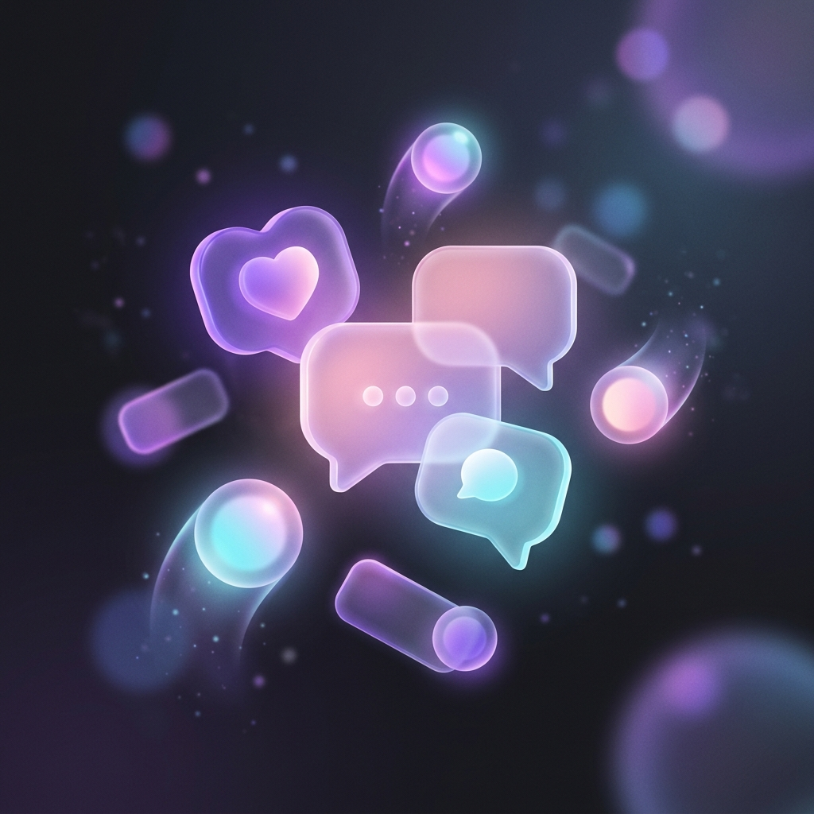
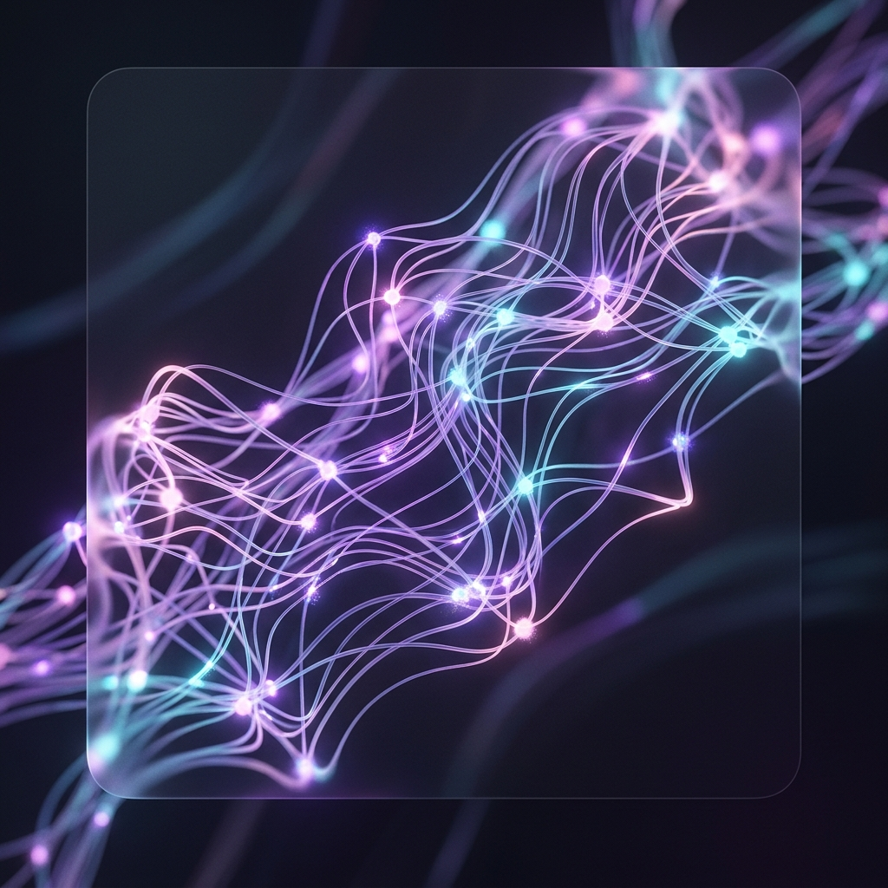

Un espacio para hablar, a tu ritmo.
No hace falta encontrar las palabras perfectas ni explicar todo de una vez. Puedes escribir o simplemente hablar, cuando lo necesites.
Proyecto academico de acompanamiento emocional
Un espacio de compania para momentos dificiles.
YUE Companion es un agente de inteligencia artificial disenado para acompanarte en momentos de dificultad emocional, academica o familiar, a traves de la conversacion, la voz y la memoria.
Pensado para escuchar antes que para resolver.
El proyecto
Muchas personas atraviesan presion academica, conflictos familiares o momentos de soledad sin un espacio donde expresarlo sin sentirse juzgadas.
YUE Companion nace como un intento de ofrecer ese espacio: un agente que escucha, conversa y acompana, disponible cuando se necesita.
Es un proyecto academico de investigacion en inteligencia artificial aplicada al bienestar emocional.
Como acompana

No hace falta encontrar las palabras perfectas ni explicar todo de una vez. Puedes escribir o simplemente hablar, cuando lo necesites.
Puedes hablarle con tu voz y escuchar su respuesta, como una conversacion real.

YUE recuerda el contexto de tus conversaciones anteriores para acompanarte mejor con el tiempo.
Equipo
La pagina separa con claridad el desarrollo del agente y la integracion web para no atribuir el trabajo completo a una sola persona.
Desarrollo del agente
Diseno y desarrollo web
Avatar 3D y motor de render: equipo de desarrollo del agente. Integracion en esta web: Juan David.
Privacidad y limites
YUE Companion es un proyecto academico y no reemplaza la ayuda de un profesional de salud mental. Si tu o alguien que conoces esta pasando por una crisis, te animamos a buscar apoyo de un adulto de confianza o un profesional.
Tus conversaciones se guardan localmente en tu dispositivo. No se envian ni almacenan en servidores externos. Nadie mas que tu tiene acceso a ellas desde fuera de tu equipo.